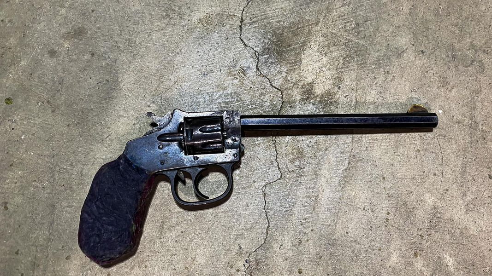

Mobile uploads
This might be my most prized possession. (I think telling its story might be relevant to the brutal beating and murder by Memphis police of Tyre Nichols).
I just bought this gun last night from a felon. This is something I do from time to time. I buy guns from people that shouldn’t have them.
But this gun is special. This gun was pulled on me by an enraged, drug-addled man with extreme mental illness issues. He accused me of letting people break into his room in our house and take his clothes while he was in jail for 2 months. I chained the door locked with the biggest chain I had.
During the encounter where he pulled it on me he then pointed it directly in the face of another homeless man, EB.
He has pulled this gun (which is loaded with 4 live rounds and 2 spend cases) on everyone in our house.
I would say I would have been in my right to pull my firearm and defend myself during this encounter.
But I didn’t.
I calmly (which is difficult for me) told him that I’m sorry he lost his clothes and I’d help him get more. I got in my truck and drove away. I’ve been told he fired at my truck. But I didn’t see or hear that myself.
This is my most prized possession because it is out of our house and out of the hands of a truly mentally I’ll person.
NO ONE GOT HURT.
******
The reason I think this story is relevant today is because de-escalation works. I’m not great at it. But my homeless friends are masters at it. When shit gets real, shit gets real calm. It’s amazing.
I’m not saying police can walk away from an armed gun man. But what I am saying is that there is more than one way to deal with these situations. It seems like police escalate situations. That they try to over-power a person. You can’t over-power someone who doesn’t care if they live or die. They have nothing to lose. So they’ll escalate right along with you.
I truly wish NO ONE had to deal with crazed people with guns. But it is what a police officer signed up for. I feel like if you’re going to be in that business you’re going to have to be more nuanced in your approach.
Personally, I’m having pretty good luck just buying guns from people that I don’t want to have guns.